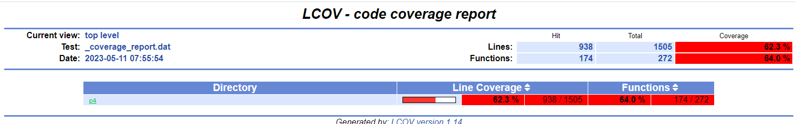
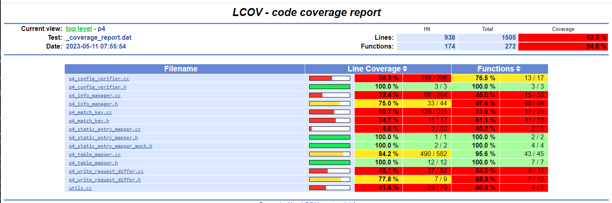
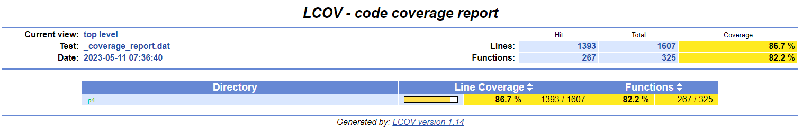
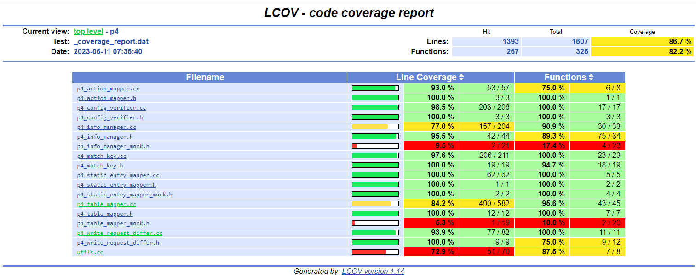

Running Stratum Unit Tests
Prerequisites
Install Bazel
The Stratum unit tests run under control of the Bazel build system. You will need to install the correct version of Bazel in order to run them.
sudo apt install bazel-4.2.3
For maximum performance, you will want to do unit testing on a system with sufficient resources (cores, memory, disk space) to support multiple threads and a large Bazel cache, or a build farm with a large remote cache.
Install SDE(s)
Build and install the SDEs for the targets you wish to test. You will need to install all three SDEs (Tofino, DPDK, ES2K) in order to run the full suite of tests.
You will need to make the following modification to the ES2K SDE after you install it:
echo "ES2K" > path-to-es2k-sde/share/TARGET
The Bazel build uses this file to verify that the SDE pointed to by the environment variable is for ES2K.
Define environment variable(s)
You will need to define an environment variable that provides the path to the install directory for the SDE.
Target |
Environment Variable |
|---|---|
Tofino |
SDE_INSTALL=path-to-tofino-sde (or) SDE_INSTALL_TAR=path-to-tarball-containing-tofino-sde |
DPDK |
DPDK_INSTALL=path-to-dpdk-sde (or) SDE_INSTALL=path-to-dpdk-sde |
ES2K |
ES2K_INSTALL=path-to-es2k-sde (or) SDE_INSTALL=path-to-es2k-sde |
Getting source code
P4 Control Plane (networking-recipe)
If you are working with a copy of the full P4 Control Plane, you will need to change to the Stratum root directory.
cd stratum/stratum
To confirm that you are in the right directory, check for a file named WORKSPACE.
doctor@tardis:~/stratum$ ls WORKSPACE
WORKSPACE
Standalone Stratum
You can run the unit tests on a standalone instance of the Stratum repository.
git clone https://github.com/ipdk-io/stratum-dev.git stratum
cd stratum
Running tests
Test selection
Single test
To run a single test, issue a bazel test command specifying the target test you wish to run:
bazel test //stratum/hal/lib/p4:p4_table_mapper_test
Bazel will build the test and its dependencies if they are out of date. It will then run the test.
INFO: Analyzed target //stratum/hal/lib/p4:p4_table_mapper_test (2 packages loaded, 4105 targets configured).
INFO: Found 1 test target...
Target //stratum/hal/lib/p4:p4_table_mapper_test up-to-date:
bazel-bin/stratum/hal/lib/p4/p4_table_mapper_test
INFO: Elapsed time: 10.517s, Critical Path: 9.27s
INFO: 5 processes: 2 internal, 3 linux-sandbox.
INFO: Build completed successfully, 5 total actions
//stratum/hal/lib/p4:p4_table_mapper_test PASSED in 0.5s
INFO: Build completed successfully, 5 total actions
All tests in a directory
You can run all the tests in a directory by specifying the target name all:
bazel test //stratum/hal/lib/p4:all
Abbreviated output:
//stratum/hal/lib/p4:p4_table_mapper_test (cached) PASSED in 0.5s
//stratum/hal/lib/p4:p4_action_mapper_test PASSED in 0.2s
//stratum/hal/lib/p4:p4_config_verifier_test PASSED in 0.4s
//stratum/hal/lib/p4:p4_info_manager_test PASSED in 0.2s
//stratum/hal/lib/p4:p4_match_key_test PASSED in 0.5s
//stratum/hal/lib/p4:p4_static_entry_mapper_test PASSED in 0.2s
//stratum/hal/lib/p4:p4_write_request_differ_test PASSED in 0.3s
//stratum/hal/lib/p4:utils_test PASSED in 0.3s
All tests in or below a directory
You can select a directory and its subdirectories by specifying an ellipsis (…):
bazel test //stratum/glue/...
Abbreviated output:
//stratum/glue/gtl:cleanup_test PASSED in 0.0s
//stratum/glue/gtl:map_util_test PASSED in 0.0s
//stratum/glue/net_util:absl_test PASSED in 0.1s
//stratum/glue/net_util:bits_test PASSED in 0.9s
//stratum/glue/net_util:ipaddress_test PASSED in 0.1s
//stratum/glue/status:status_test PASSED in 0.0s
Target-specific tests
If any of the tests you wish to run is in one of the following directories, you will need to specify the target to use:
//stratum/hal/lib/common
//stratum/hal/lib/tdi
//stratum/hal/lib/tdi/dpdk
//stratum/hal/lib/tdi/es2k
//stratum/hal/lib/tdi/tofino
You do this by including the following on the command line. It can go before or after the target name.
--define target=<target>
where <target> is one of dpdk, es2k, or tofino.
For example:
bazel test --define target=dpdk //stratum/hal/lib/tdi/dpdk:dpdk_chassis_test
All tests in a file
You can put a list of targets in a text file:
tofino-tests.txt:
//stratum/hal/lib/tdi/tofino:tofino_hal_test
//stratum/hal/lib/tdi/tofino:tofino_switch_test
And run them using the command:
xargs -a tofino-tests.txt bazel test --define target=tofino
Abbreviated output:
//stratum/hal/lib/tdi/tofino:tofino_hal_test (cached) PASSED in 0.4s
//stratum/hal/lib/tdi/tofino:tofino_switch_test (cached) PASSED in 0.4s
ES2K Tests
The following is a suggested set of unit tests for ES2K:
es2k-tests.txt
//stratum/glue/...
//stratum/hal/lib/p4/...
//stratum/lib/...
//stratum/public/...
//stratum/hal/lib/tdi:all
//stratum/hal/lib/tdi/es2k:es2k_chassis_manager_test
//stratum/hal/lib/tdi/es2k:es2k_hal_test
//stratum/hal/lib/yang...
These tests should be run against the ES2K SDE:
xargs -a es2k-tests.txt bazel test --define target=es2k
DPDK Tests
The following is a suggested set of unit tests for DPDK:
dpdk-tests.txt
//stratum/glue/...
//stratum/hal/lib/p4/...
//stratum/lib/...
//stratum/public/...
//stratum/hal/lib/tdi:tdi_action_profile_manager_test
//stratum/hal/lib/tdi:tdi_counter_manager_test
//stratum/hal/lib/tdi:tdi_packetio_manager_test
//stratum/hal/lib/tdi:tdi_pipeline_utils_test
//stratum/hal/lib/tdi:tdi_pre_manager_test
//stratum/hal/lib/tdi:tdi_table_manager_test
//stratum/hal/lib/tdi:utils_test
//stratum/hal/lib/tdi/dpdk:dpdk_chassis_manager_test
//stratum/hal/lib/yang/...
These tests should be run against the DPDK SDE:
xargs -a dpdk-tests.txt bazel test --define target=dpdk
Flaky Tests
Some of the unit tests are known to be flaky (they fail intermittently).
These tests have been flagged as flaky by specifying tags = ["flaky"]
in the stratum_cc_test rule.
To run a test suite excluding flaky tests:
xargs -a dpdk-tests.txt bazel test --define target=dpdk --test_tag_filters=-flaky
Test results
Stratum unit tests use the Google Test framework, so it is possible to
generate XML or JSON output by specifying the --gtest_output parameter
on the test command line.
I have not found a way to do this through the bazel test command.
Measuring test coverage
Single-test coverage
Measuring coverage
Unit test code coverage can be measured by means of the bazel coverage command:
bazel coverage \
--combined_report=lcov \
--javabase=@bazel_tools//tools/jdk:remote_jdk11 \
//stratum/hal/lib/p4:p4_table_mapper_test
Abbreviated output:
//stratum/hal/lib/p4:p4_table_mapper_test PASSED in 1.9s
Generating the report
To generate an HTML coverage report:
genhtml --output coverage \
"$(bazel info output_path)/_coverage/_coverage_report.dat"
Abbreviated output:
Overall coverage rate:
lines......: 62.3% (938 of 1505 lines)
functions..: 64.0% (174 of 272 functions)
Viewing the report
To view the coverage report, open coverage/index.html in a browser:

Click the directory name to see the files page:

Multiple-test coverage
Measuring coverage
To run and measure coverage for all the tests in a directory:
bazel coverage \
--combined_report=lcov \
--javabase=@bazel_tools//tools/jdk:remote_jdk11 \
//stratum/hal/lib/p4:all
Abbreviated output:
//stratum/hal/lib/p4:p4_table_mapper_test (cached) PASSED in 1.9s
//stratum/hal/lib/p4:p4_action_mapper_test PASSED in 1.9s
//stratum/hal/lib/p4:p4_config_verifier_test PASSED in 2.6s
//stratum/hal/lib/p4:p4_info_manager_test PASSED in 2.0s
//stratum/hal/lib/p4:p4_match_key_test PASSED in 2.2s
//stratum/hal/lib/p4:p4_static_entry_mapper_test PASSED in 2.3s
//stratum/hal/lib/p4:p4_write_request_differ_test PASSED in 1.7s
//stratum/hal/lib/p4:utils_test PASSED in 1.9s
Generating the report
To generate an HTML coverage report:
rm -fr coverage/
genhtml --output coverage \
"$(bazel info output_path)/_coverage/_coverage_report.dat"
Abbreviated output:
Overall coverage rate:
lines......: 86.7% (1393 of 1607 lines)
functions..: 82.2% (267 of 325 functions)
Viewing the report
To view the coverage report, use a browser to open coverage/index.html:

Click the p4 directory to view the files page:
